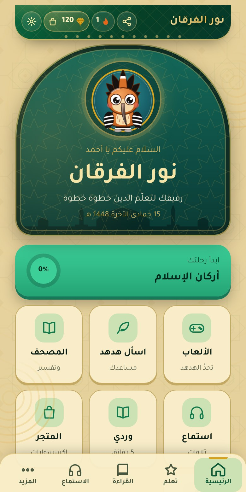
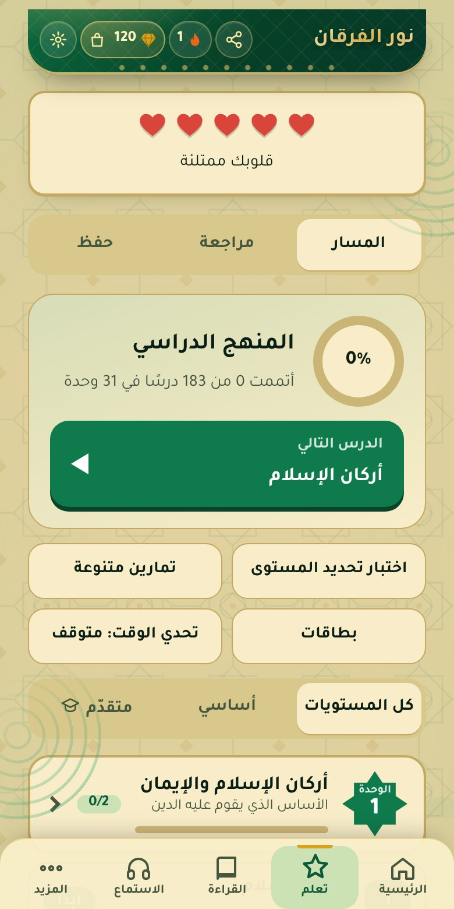
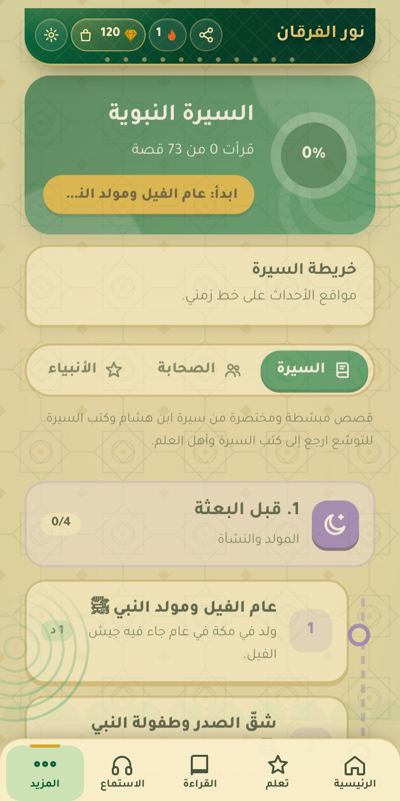
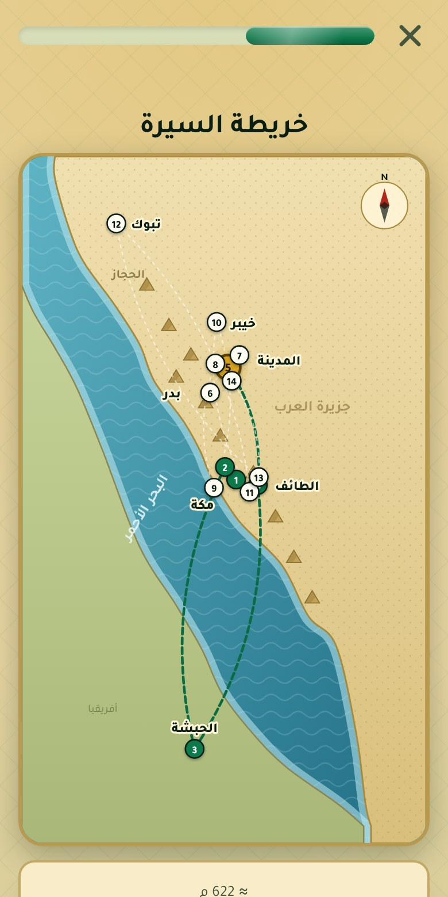
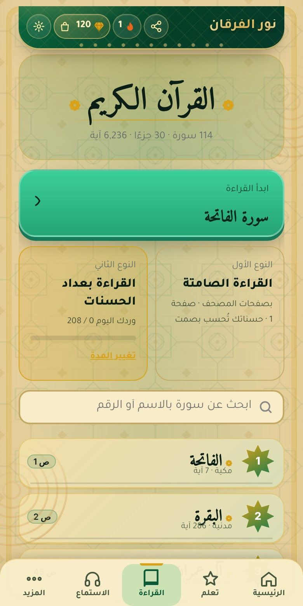

ماذا ستجد؟
تعلّم، قراءة، استماع، وسيرة نبوية في تطبيق واحد.
دروس قصيرة ممتعةوحدات في العقيدة والعبادات والسيرة وأسئلة تفاعلية.
وردي اليوميآية وحديث وذكر ومراجعة في خمس دقائق.
مراجعة ذكيةالأسئلة التي أخطأت فيها تعود إليك بفواصل متدرجة.
سيرة وخريطةقصص السيرة مع خريطة تفاعلية وخط زمني.
المصحف والتلاوةقراءة وتفسير واستماع بتلوين الكلمة الجارية.
للعائلةوضع الأطفال وركن الوالدين بتقرير أسبوعي.
لقطات من التطبيق
العربية والإنجليزية والفرنسية.





فيديوهات
مقاطع تعريفية قصيرة ستُضاف هنا قريبًا.